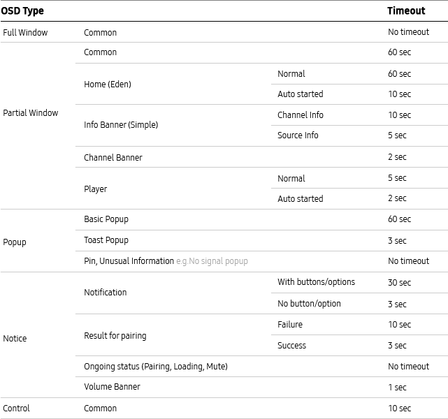

Use the timeout function to automatically go back to the viewing environment, which is the TV’s default state.
Policy
Apply the timeout function to close an OSD if there is no user input within a specified time length.
When a user’s confirmation is mandatory, you may not apply the timeout function.
Apply the timeout based on OSD type as follows. For OSD type, refer to the definition within the Overlay. If there is the timeout rule specifying specially in each IA specification, you have to apply the specifications above all.
In case it is not so, follow under common specifications.

Apply the timeout for patterns and components as follows. Basically, the timeout of a component follows the timeout of the OSD where the component is included.